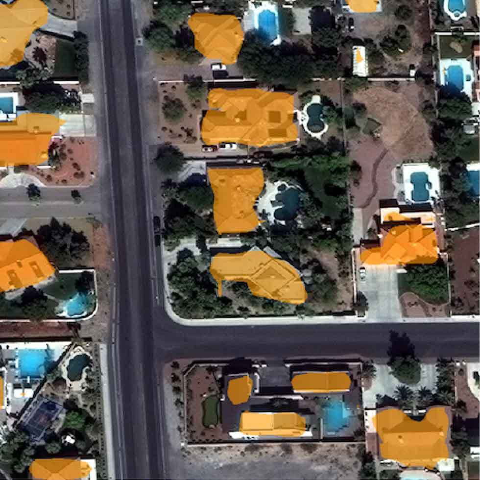
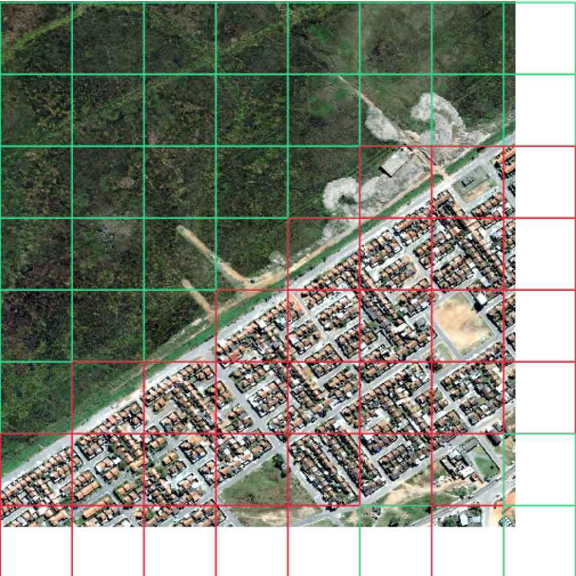
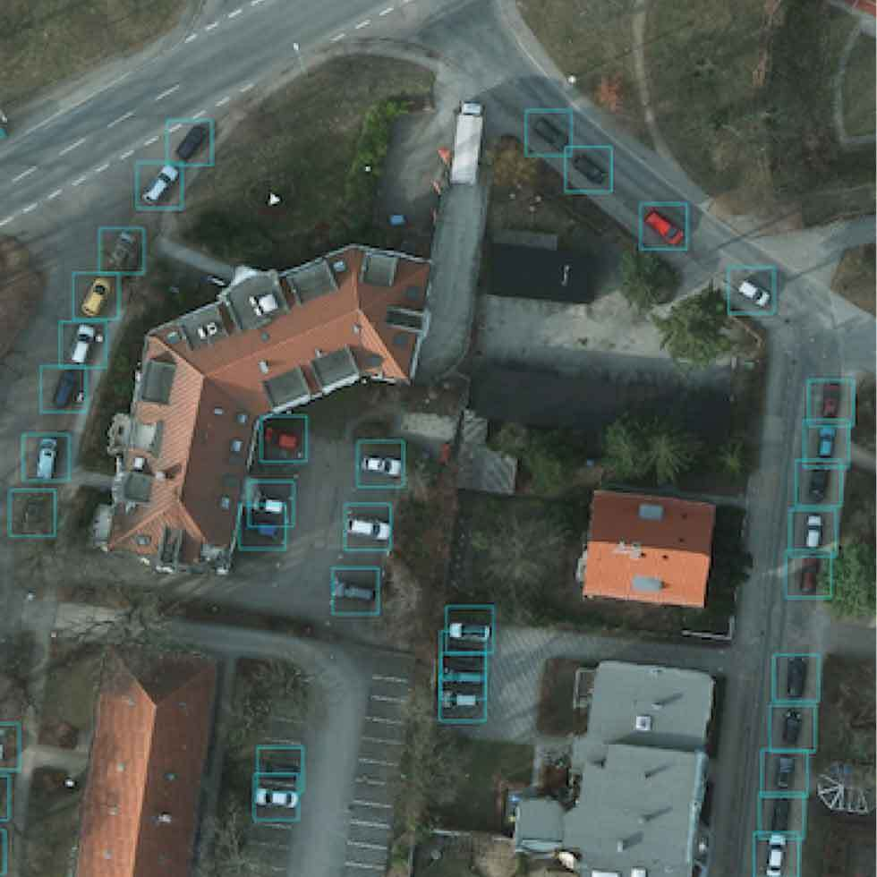
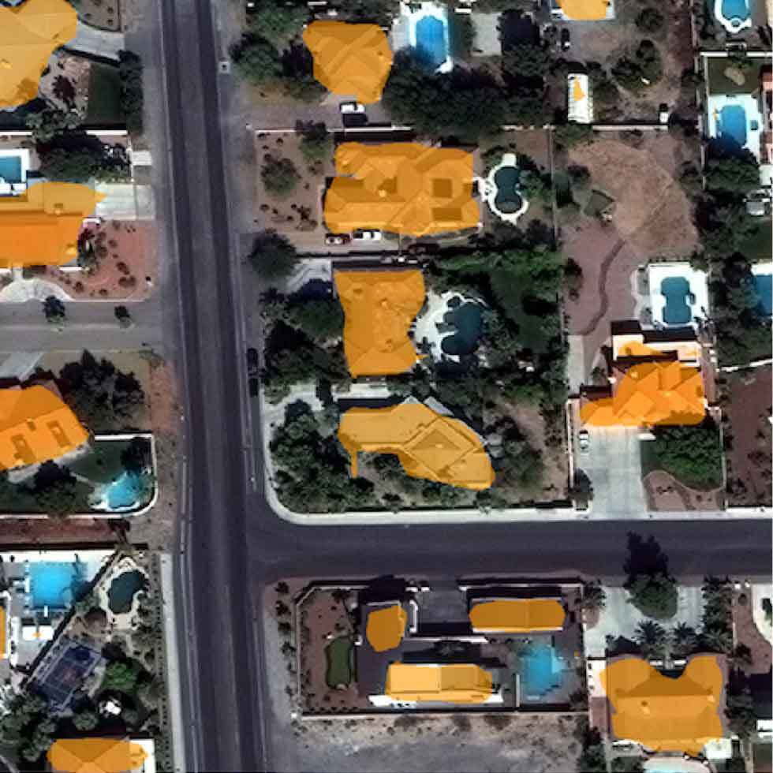
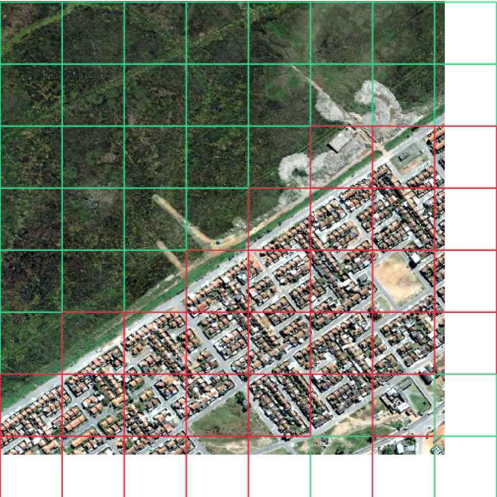
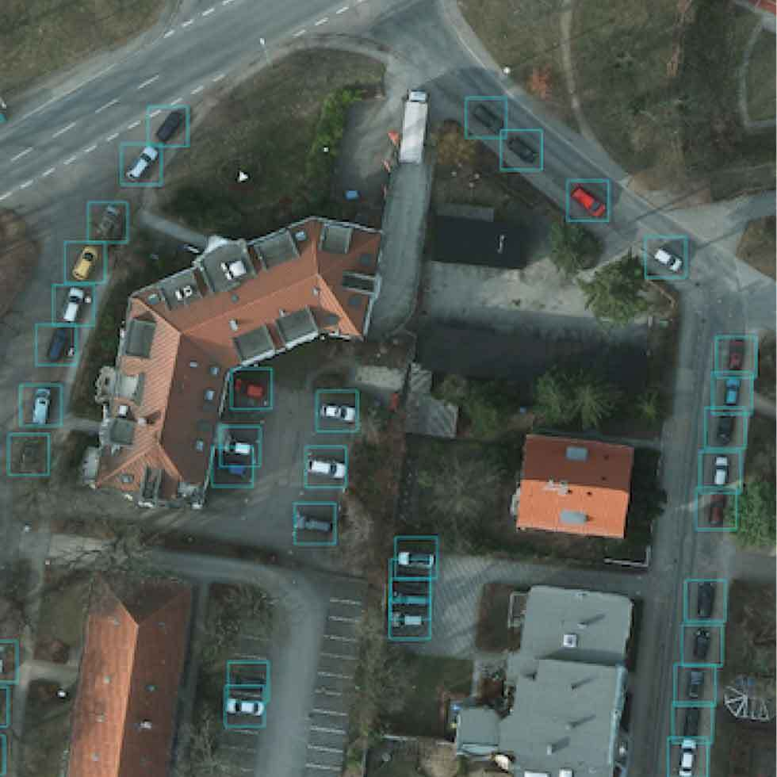

Raster Vision is an open source library and framework that bridges the divide between the world of GIS and deep learning-based computer vision. It provides a configurable computer vision pipeline that works on chip classification, semantic segmentation, and object detection.
Example is showing a semantic segmentation task

Input set of images and training data, optionally with Areas of Interest (AOIs) that describe where the images are labeled.

The computer vision pipeline configuration documentation is easy to read, reuse, and maintain.


Model bundle is deployed in batch processes, live servers, and other custom workflows.
Raster Vision is versatile and can seamlessly handle the idiosyncrasies of working with massive image datasets across a broad range of industries.
Including chip classification, object detection, and semantic segmentation.
Raster Vision produces predictions that are georeferenced and ready for downstream analysis.
Fully annotating a large pixel scene is costly and time consuming. Raster Vision supports specifying an AOI in the form of one or more polygons.
Raster Vision can ingest both raster and vector data and convert them to a form suitable for training.
While retaining the existing pre-trained weights, Raster Vision modifies the first convolutional layer to accept additional (or fewer) channels.
Raster Vision supports customizable Albumentations transforms to use during training.
Utilize a wide variety of compatible models from local directories using TorchHub.
Raster Vision implements deep learning functionality with PyTorch (a popular deep learning library) and Torchvision.
Raster Vision provides support for running pipelines using AWS Batch.
Geospatial images tend to be too large to feed directly into a neural network and must first be broken up into smaller “chips”.
AWS (S3 and Batch), PyTorch, TorchVision, Albumentations, Rasterio, Shapely, Gdal and Numpy.
Utilize custom datasets, model architectures, and arbitrary loss functions.
Create consistent and maintainable results.
Benefit from a constantly updated & supported framework released under the open source Apache 2.0 license.
Handles a variety of geospatial file formats, map-based coordinates, incomplete labeling, and multiband (3+ bands) imagery.
Works out-of-the-box with massive imagery commonly used in the geospatial field.
Enjoy a high-level programmatic API with sensible defaults for configuring modeling pipelines. Doesn't require expertise in PyTorch or deep learning.
Skip the manual setup and use CloudFormation templates.
Object-oriented architecture is extendable to new computer vision tasks and deep learning frameworks.
Please select a topic below or fill out our contact form related to your inquiry.
Let us know what you're working on! You can ask questions and talk to developers.
We are happy to take contributions! It is best to get in touch about larger features or design changes.
Browse through a series of machine learning projects produced by Azavea Inc.
Someone will get back to you shortly.
An open-source computer vision and machine-learning framework developed by Azavea.


 




